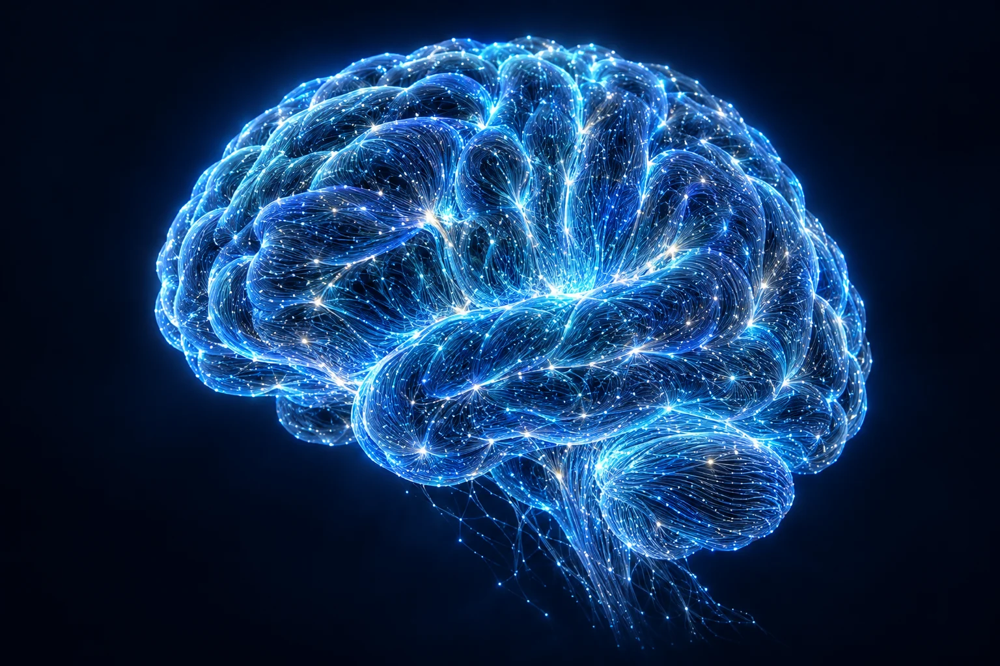

零专用硬件
基于日常手机或电脑摄像头，让训练融入熟悉的居家环境。

01 / OUR VALUE
用更轻的设备门槛，连接更完整的康复路径。
基于日常手机或电脑摄像头，让训练融入熟悉的居家环境。
融合动作感知与康复知识，辅助评估、记录与个性化管理。
把康复动作变成游戏交互，以即时反馈回应每一份努力。
从评估、计划到训练与随访，让院内院外的管理持续衔接。
02 / CONNECTED SOLUTIONS
为患者、专家与机构，提供彼此连接的产品体验。
03 / THE TECHNOLOGY
四大核心能力，共同支撑从动作感知到持续管理的技术链路。
04 / BUILT TO CONNECT
让技术回归康复需求，把复杂留给平台，把便利带给每一位使用者。
以日常摄像头连接训练
患者 · 专家 · 机构
评估 · 训练 · 分身 · 安全
从院内到家，持续衔接
05 / LATEST PERSPECTIVES
关注产品进展、技术思考与康复新场景。
了解安脑智联如何组织评估、训练与随访，让院后康复形成连续的管理路径。
阅读全文从摄像头到姿态关键点，解读 RA-FM 评估大模型的技术路径。
阅读全文以动作反馈和阶段目标为线索，探索更容易融入生活的康复训练体验。
阅读全文面向医疗机构、高校与产业伙伴，探索围绕真实康复需求的联合创新。
阅读全文06 / PEOPLE & PURPOSE
从真实需求出发，为更可及、更连续的康复服务而努力。
创始人 · 连接技术创新与康复需求
以专业康复场景，定义产品问题与服务边界。
把 AI 能力，转化为日常可用的康复体验。
期待携手，共建康复生态